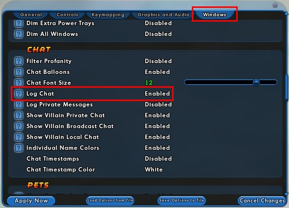

Badge detection work by taking advantage of the in game chat log file. When one of your characters receives a new badge or you select a new badge title, a text line is dropped in the chat box, and the chat log will be saved to a file, which you then upload to the log parsing tool. The chat log is not saved by default, but you can enable it by opening your settings window and finding the following option:
Unfortunately, this will only detect newly earned badges, and not badges you have already earned. To detect all badges, you will need to run the setTitle binds.
Follow the steps below to install and run the setTitle binds
/bind_load_file "c:\CoH\settitle.txt". This assumes your City of Heroes directory is c:\CoH. Change it to match the directory you have installed City of Heroes toIf you've followed all steps correctly, your existing badges will be saved to the log files. You can now upload the log files into this tool.
You can find the log files in in the
<CoHDirectory>/<username>/logs
directory. Select all files and upload them to the log parser dialog.